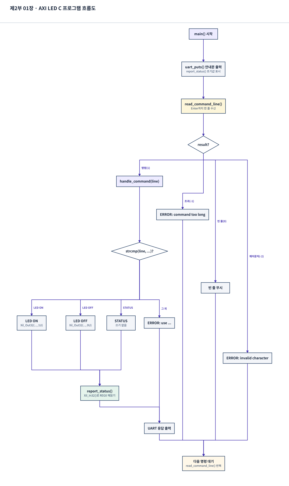

00이 장의 목표
u8·u32·메모리 주소·문자열 비교·UART 송수신·레지스터 읽기/쓰기를 실제 코드로 해설합니다.
- Basys3
- MicroBlaze V
- Vivado / Vitis 2024.2
- AXI4-Lite
01C 프로그램 전체 흐름
A · 코드 실행
main() → read_command_line() → handle_command() → Xil_Out32()/report_status() → UART 응답

02main.c 전체 소스
B · 전체 코드
아래 코드는 다운로드 소스와 동일합니다. USER_IP_BASEADDR를 실제 Address Editor 값으로 바꿉니다.
/* P2-01: UART 문자열 명령으로 사용자 AXI IP의 LED0를 제어한다. */
#include "xparameters.h" /* Vitis BSP의 하드웨어 주소 정의 */
#include "xil_types.h" /* u8(8비트), u32(32비트) 자료형 */
#include "xil_io.h" /* Xil_In32(), Xil_Out32() */
#include "xuartlite_l.h" /* XUartLite_RecvByte(), SendByte() */
#include <string.h> /* strcmp(): 두 문자열 비교 */
/* (필수 수정) Vivado Address Editor의 사용자 IP 주소를 입력한다. */
#ifndef USER_IP_BASEADDR
#define USER_IP_BASEADDR 0xFFFFFFFFU
#endif
#if USER_IP_BASEADDR == 0xFFFFFFFFU
#error "USER_IP_BASEADDR를 실제 Vivado AXI IP Base Address로 수정하세요"
#endif
#define LED_REG_OFFSET 0x00U /* slv_reg0: bit0가 LED0 출력 */
#define LINE_CAPACITY 32U /* 최대 31문자 + 종료문자 */
/* 제1부에서 사용한 AXI UART Lite를 재사용한다. */
#if defined(XPAR_XUARTLITE_0_BASEADDR)
#define UART_BASEADDR XPAR_XUARTLITE_0_BASEADDR
#elif defined(XPAR_UARTLITE_0_BASEADDR)
#define UART_BASEADDR XPAR_UARTLITE_0_BASEADDR
#elif defined(XPAR_AXI_UARTLITE_0_BASEADDR)
#define UART_BASEADDR XPAR_AXI_UARTLITE_0_BASEADDR
#else
#error "xparameters.h에서 UART Lite BASEADDR 매크로를 확인하세요"
#endif
/* 문자열의 각 문자를 UART로 보낸다. */
static void uart_puts(const char *text)
{
while (*text != '\0') { /* '\0': 문자열의 끝 */
XUartLite_SendByte(UART_BASEADDR, (u8)*text);
text++;
}
}
/* u32 값을 8자리 16진수 문자열로 출력한다. */
static void uart_hex32(u32 value)
{
const char digits[] = "0123456789ABCDEF";
int shift;
for (shift = 28; shift >= 0; shift -= 4) {
u8 nibble = (u8)((value >> shift) & 0x0FU);
XUartLite_SendByte(UART_BASEADDR, (u8)digits[nibble]);
}
}
/* REG0 읽기값에서 LED0 상태를 해석해 출력한다. */
static void report_status(const char *prefix)
{
u32 value = Xil_In32(USER_IP_BASEADDR + LED_REG_OFFSET);
uart_puts(prefix);
uart_puts((value & 1U) ? "LED=ON REG0=0x" : "LED=OFF REG0=0x");
uart_hex32(value);
uart_puts("\r\n");
}
/* Enter까지 입력받는다. 반환: 1=명령, 0=빈 줄, -1=초과, -2=제어문자. */
static int read_command_line(char *line, u32 capacity)
{
u32 used = 0U;
int overflow = 0;
int invalid = 0; /* NUL 등 제어문자 포함 명령 거부 */
while (1) {
u8 ch = XUartLite_RecvByte(UART_BASEADDR); /* 1바이트 대기 수신 */
if (ch == (u8)'\r' || ch == (u8)'\n') {
line[used] = '\0'; /* 항상 문자열을 종료한다. */
if (overflow) return -1; /* 버퍼 밖에 쓰지 않는다. */
if (invalid) return -2; /* 제어문자가 포함되면 거부 */
return used ? 1 : 0;
}
if (ch < (u8)0x20U || ch > (u8)0x7EU) {
invalid = 1; /* 출력 가능한 ASCII만 허용 */
continue;
}
if (used < capacity - 1U) {
line[used++] = (char)ch;
} else {
overflow = 1; /* Enter 전까지 초과 문자를 버린다. */
}
}
}
/* 문자열을 비교한 후 AXI 레지스터에 기록하거나 읽는다. */
static void handle_command(const char *line)
{
if (strcmp(line, "LED ON") == 0) {
Xil_Out32(USER_IP_BASEADDR + LED_REG_OFFSET, 1U);
report_status("OK ");
} else if (strcmp(line, "LED OFF") == 0) {
Xil_Out32(USER_IP_BASEADDR + LED_REG_OFFSET, 0U);
report_status("OK ");
} else if (strcmp(line, "STATUS") == 0) {
report_status("STATUS ");
} else {
uart_puts("ERROR: use LED ON / LED OFF / STATUS\r\n");
}
}
int main(void)
{
char line[LINE_CAPACITY]; /* ASCII 명령을 저장할 문자 배열 */
int result;
uart_puts("\r\nP2-01 AXI LED CONTROL\r\n");
uart_puts("Commands: LED ON | LED OFF | STATUS (Enter)\r\n");
report_status("STATUS ");
while (1) {
result = read_command_line(line, LINE_CAPACITY);
if (result > 0) {
handle_command(line);
} else if (result == -2) {
uart_puts("ERROR: invalid character\r\n");
} else if (result < 0) {
uart_puts("ERROR: command too long (max 31)\r\n");
}
/* 빈 줄 및 CRLF의 두 번째 줄바꿈은 무시한다. */
}
}
03표준 C와 AMD BSP의 차이
C · 자료형 해설
| 실제 표현 | 자료형·명령의 의미 | 코드에서 하는 일 |
|---|---|---|
u8 | AMD xil_types.h에 정의된 부호 없는 8비트 정수. uint8_t에 대응 | UART 문자를 1바이트 단위로 받는다. |
u32 | AMD 부호 없는 32비트 정수. uint32_t에 대응 | 레지스터 읽기값과 수신 길이를 보관한다. |
char line[32] | C 표준 문자 배열 32바이트 | 31개 문자와 문자열 끝 \0 저장 |
strcmp() | 표준 C 라이브러리 string.h의 문자열 비교 | 정확하게 일치하면 0 반환 |
0x...U | 16진수 부호 없는 정수 상수 | 주소·마스크·데이터에 사용 |
(u8) | 자료형 변환(Cast) | 문자를 8비트 전송값으로 변환 |
04CPU가 하드웨어에 접근하는 과정
C · AMD 전용 API
| 실제 코드 | 동작 | 왜 필요한가 |
|---|---|---|
XUartLite_RecvByte(UART_BASEADDR) | PC가 전송한 1바이트가 들어올 때까지 대기 | 문자열의 각 글자를 수신 |
XUartLite_SendByte(..., (u8)*text) | UART 송신 레지스터로 1바이트 전달 | 실행 결과를 PC로 표시 |
Xil_Out32(USER_IP_BASEADDR + 0x00, 1U) | 사용자 IP의 REG0에 32비트 값 1 기록 | LED0 켜기 |
Xil_In32(USER_IP_BASEADDR + 0x00) | REG0 32비트 읽기 | 실제 기록값을 읽어 확인 |
USER_IP_BASEADDR | Vivado에서 배정한 IP 시작 주소 | CPU가 어떤 주변장치를 제어할지 결정 |
LED_REG_OFFSET | IP 시작 주소에서 REG0까지의 거리(0x00) | 동일 IP 내부 레지스터 선택 |
AXI 쓰기 데이터 1은 단순한 문자 '1'과 다릅니다. '1'의 ASCII 값은 0x31이지만, 1U는 정수 1입니다. 이 코드는 한 줄을 문자열로 비교한 다음 정수 1을 레지스터에 씁니다.
05read_command_line() — Enter까지 수신
D · 핵심 코드 풀이
static int read_command_line(char *line, u32 capacity)
{
u32 used = 0U;
int overflow = 0;
int invalid = 0; /* NUL 등 제어문자 포함 명령 거부 */
while (1) {
u8 ch = XUartLite_RecvByte(UART_BASEADDR); /* 1바이트 대기 수신 */
if (ch == (u8)'\r' || ch == (u8)'\n') {
line[used] = '\0'; /* 항상 문자열을 종료한다. */
if (overflow) return -1; /* 버퍼 밖에 쓰지 않는다. */
if (invalid) return -2; /* 제어문자가 포함되면 거부 */
return used ? 1 : 0;
}
if (ch < (u8)0x20U || ch > (u8)0x7EU) {
invalid = 1; /* 출력 가능한 ASCII만 허용 */
continue;
}
if (used < capacity - 1U) {
line[used++] = (char)ch;
} else {
overflow = 1; /* Enter 전까지 초과 문자를 버린다. */
}
}
}| 구문 | 이해 중심 해설 |
|---|---|
used < capacity - 1U | 종료문자 공간 1바이트를 남기므로 배열을 넘지 않는다. |
\r, \n | 각각 CR, LF. 터미널의 Enter를 나타내는 값이다. |
\0 | 문자열의 끝 표시로 strcmp가 어디까지 비교할지 알려준다. |
overflow | 31자 초과 시 잘린 앞부분을 정상 명령으로 오해하지 않도록 막는다. |
return 1 / 0 / -1 | 명령 정상 / 빈 줄 / 길이 초과를 구분하며, -2는 제어문자 오류다. |
06handle_command() — 명령 비교·레지스터 제어
D · 핵심 코드 풀이
if (strcmp(line, "LED ON") == 0) {
Xil_Out32(USER_IP_BASEADDR + LED_REG_OFFSET, 1U);
report_status("OK ");
} else if (strcmp(line, "LED OFF") == 0) {
Xil_Out32(USER_IP_BASEADDR + LED_REG_OFFSET, 0U);
report_status("OK ");
} else if (strcmp(line, "STATUS") == 0) {
report_status("STATUS ");
}strcmp()가 0이면 문자열이 정확하게 일치합니다. LED ON·LED OFF는 쓰기 후 읽기, STATUS는 읽기만 합니다. 입력 오류는 어떤 레지스터도 변경하지 않습니다.
report_status()가 읽은 32비트 값의 bit0을 검사해 LED=ON 또는 LED=OFF를 출력합니다. 이 값이 실제 LED 배선으로 전달되도록 Vivado의 assign led_o = slv_reg0[0];와 .p2_led_o(ip_led0)가 필요합니다.
07명령 입력을 코드와 연결
E · 예제 추적
| PC 입력 | C 처리 | AXI 읽기·쓰기 | 결과 |
|---|---|---|---|
LED ON↵ | strcmp가 LED ON 분기 선택 | REG0 ← 1 → 재읽기 | LED0 ON |
STATUS↵ | STATUS 분기 선택 | REG0 읽기만 수행 | LED0 ON 유지 |
LED OFF↵ | LED OFF 분기 선택 | REG0 ← 0 → 재읽기 | LED0 OFF |
LEDON↵ | 불일치 | AXI 접근 없음 | ERROR 응답 |
PART 02 · CHAPTER 01